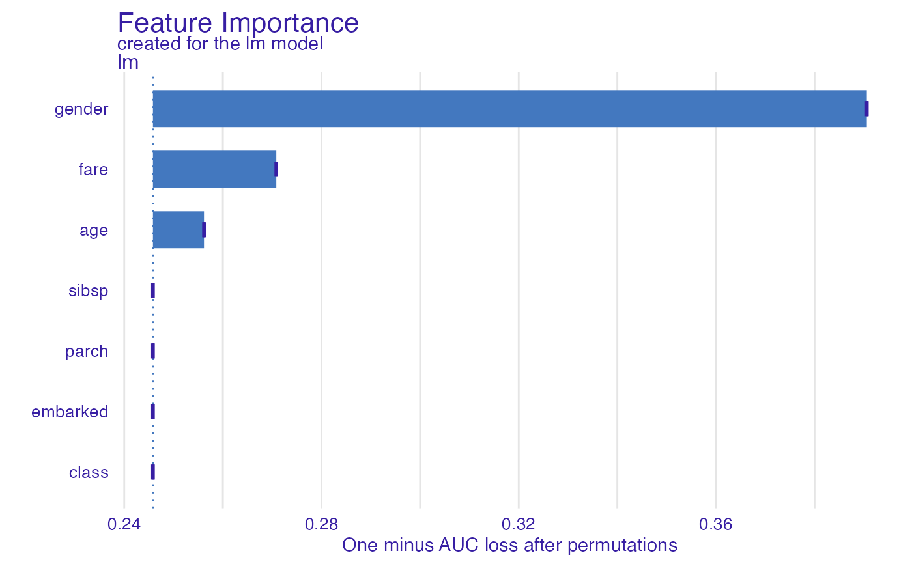
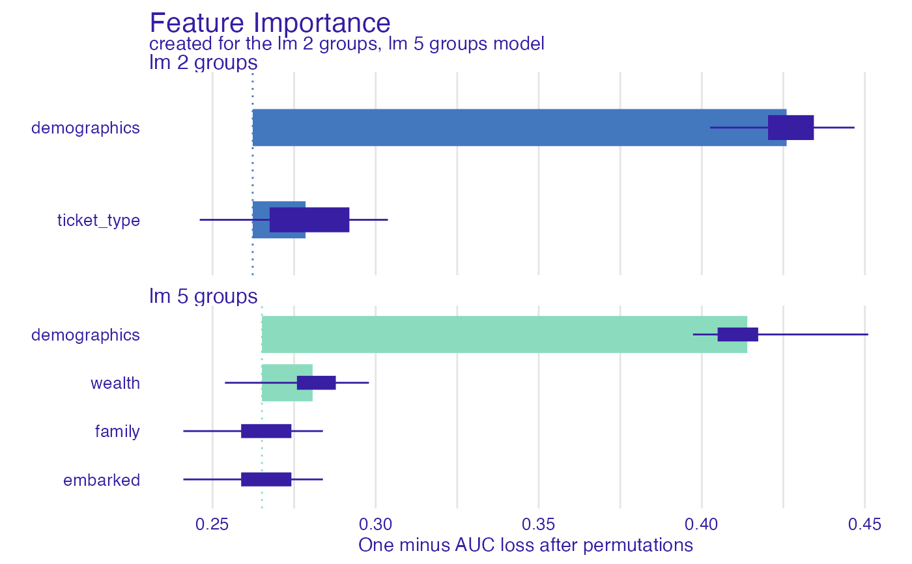
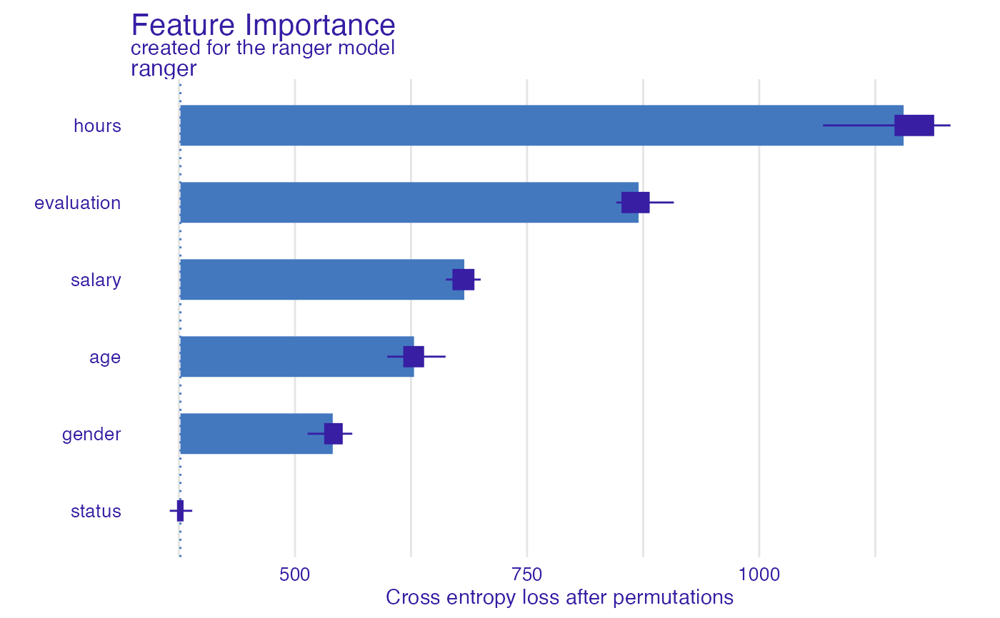

This function calculates permutation based feature importance. For this reason it is also called the Variable Dropout Plot.
feature_importance(x, ...) # S3 method for explainer feature_importance( x, loss_function = loss_root_mean_square, ..., type = c("raw", "ratio", "difference"), n_sample = NULL, B = 10, variables = NULL, variable_groups = NULL, label = NULL ) # S3 method for default feature_importance( x, data, y, predict_function = predict, loss_function = loss_root_mean_square, ..., label = class(x)[1], type = c("raw", "ratio", "difference"), n_sample = NULL, B = 10, variables = NULL, variable_groups = NULL )
Arguments
| x | an explainer created with function |
|---|---|
| ... | other parameters |
| loss_function | a function thet will be used to assess variable importance |
| type | character, type of transformation that should be applied for dropout loss.
"raw" results raw drop lossess, "ratio" returns |
| n_sample | number of observations that should be sampled for calculation of variable importance.
If |
| B | integer, number of permutation rounds to perform on each variable. By default it's |
| variables | vector of variables. If |
| variable_groups | list of variables names vectors. This is for testing joint variable importance.
If |
| label | name of the model. By default it's extracted from the |
| data | validation dataset, will be extracted from |
| y | true labels for |
| predict_function | predict function, will be extracted from |
Value
an object of the class feature_importance
Details
Find more detailes in the Feature Importance Chapter.
References
Explanatory Model Analysis. Explore, Explain and Examine Predictive Models. https://pbiecek.github.io/ema
Examples
library("DALEX") model_titanic_glm <- glm(survived ~ gender + age + fare, data = titanic_imputed, family = "binomial") explain_titanic_glm <- explain(model_titanic_glm, data = titanic_imputed[,-8], y = titanic_imputed[,8])#> Preparation of a new explainer is initiated #> -> model label : lm ( default ) #> -> data : 2207 rows 7 cols #> -> target variable : 2207 values #> -> model_info : package stats , ver. 3.6.3 , task regression ( default ) #> -> predict function : yhat.glm will be used ( default ) #> -> predicted values : numerical, min = 0.1490412 , mean = 0.3221568 , max = 0.9878987 #> -> residual function : difference between y and yhat ( default ) #> -> residuals : numerical, min = -0.8898433 , mean = 4.198546e-13 , max = 0.8448637 #> A new explainer has been created!fi_glm_joint1 <- feature_importance(explain_titanic_glm, variable_groups = list("demographics" = c("gender", "age"), "ticket_type" = c("fare")), label = "lm 2 groups") plot(fi_glm_joint1)fi_glm_joint2 <- feature_importance(explain_titanic_glm, variable_groups = list("demographics" = c("gender", "age"), "wealth" = c("fare", "class"), "family" = c("sibsp", "parch"), "embarked" = "embarked"), label = "lm 5 groups") plot(fi_glm_joint2, fi_glm_joint1)# \donttest{ library("randomForest") model_titanic_rf <- randomForest(survived ~., data = titanic_imputed)#> Warning: The response has five or fewer unique values. Are you sure you want to do regression?explain_titanic_rf <- explain(model_titanic_rf, data = titanic_imputed[,-8], y = titanic_imputed[,8])#> Preparation of a new explainer is initiated #> -> model label : randomForest ( default ) #> -> data : 2207 rows 7 cols #> -> target variable : 2207 values #> -> model_info : package randomForest , ver. 4.6.14 , task regression ( default ) #> -> predict function : yhat.randomForest will be used ( default ) #> -> predicted values : numerical, min = 0.01266147 , mean = 0.3218524 , max = 0.9917786 #> -> residual function : difference between y and yhat ( default ) #> -> residuals : numerical, min = -0.8008915 , mean = 0.0003043609 , max = 0.8989263 #> A new explainer has been created!fi_rf_group <- feature_importance(explain_titanic_rf, variable_groups = list("demographics" = c("gender", "age"), "wealth" = c("fare", "class"), "family" = c("sibsp", "parch"), "embarked" = "embarked"), label = "rf 4 groups") plot(fi_rf_group, fi_rf)HR_rf_model <- randomForest(status ~., data = HR, ntree = 100) explainer_rf <- explain(HR_rf_model, data = HR, y = HR$status, verbose = FALSE, precalculate = FALSE) fi_rf <- feature_importance(explainer_rf, type = "raw", loss_function = loss_cross_entropy) head(fi_rf)#> variable mean_dropout_loss label #> 1 _full_model_ 246.3711 randomForest #> 2 status 246.3711 randomForest #> 3 gender 481.5901 randomForest #> 4 age 632.0873 randomForest #> 5 salary 705.2064 randomForest #> 6 evaluation 995.3356 randomForestplot(fi_rf)HR_glm_model <- glm(status == "fired"~., data = HR, family = "binomial") explainer_glm <- explain(HR_glm_model, data = HR, y = HR$status == "fired")#> Preparation of a new explainer is initiated #> -> model label : lm ( default ) #> -> data : 7847 rows 6 cols #> -> target variable : 7847 values #> -> model_info : package stats , ver. 3.6.3 , task regression ( default ) #> -> predict function : yhat.glm will be used ( default ) #> -> predicted values : numerical, min = 0.00861694 , mean = 0.3638333 , max = 0.7822214 #> -> residual function : difference between y and yhat ( default ) #> -> residuals : numerical, min = -0.7755901 , mean = -1.293796e-13 , max = 0.9820537 #> A new explainer has been created!fi_glm <- feature_importance(explainer_glm, type = "raw", loss_function = loss_root_mean_square) head(fi_glm)#> variable mean_dropout_loss label #> 1 _full_model_ 0.4175308 lm #> 2 age 0.4174924 lm #> 3 status 0.4175308 lm #> 4 salary 0.4176033 lm #> 5 gender 0.4176561 lm #> 6 evaluation 0.4328874 lmplot(fi_glm)library("xgboost") model_martix_train <- model.matrix(status == "fired" ~ . -1, HR) data_train <- xgb.DMatrix(model_martix_train, label = HR$status == "fired") param <- list(max_depth = 2, eta = 1, silent = 1, nthread = 2, objective = "binary:logistic", eval_metric = "auc") HR_xgb_model <- xgb.train(param, data_train, nrounds = 50) explainer_xgb <- explain(HR_xgb_model, data = model_martix_train, y = HR$status == "fired", label = "xgboost")#> Preparation of a new explainer is initiated #> -> model label : xgboost #> -> data : 7847 rows 6 cols #> -> target variable : 7847 values #> -> model_info : package Model of class: xgb.Booster package unrecognized , ver. Unknown , task regression ( default ) #> -> predict function : yhat.default will be used ( default ) #> -> predicted values : numerical, min = 1.687903e-06 , mean = 0.363713 , max = 0.9996712 #> -> residual function : difference between y and yhat ( default ) #> -> residuals : numerical, min = -0.9885727 , mean = 0.0001203494 , max = 0.9970635 #> A new explainer has been created!#> variable mean_dropout_loss label #> 1 _full_model_ 99.67415 xgboost #> 2 gendermale 99.67415 xgboost #> 3 evaluation 114.66323 xgboost #> 4 genderfemale 157.92084 xgboost #> 5 age 163.48822 xgboost #> 6 salary 171.69751 xgboost# }